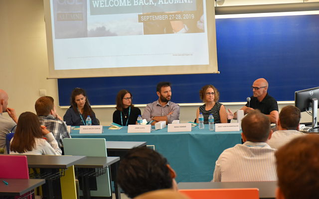

Since February 2023, I am on Twitter as @joanllull_econ. Follow me!
Follow @joanllull_econ
2026
Paper forthcoming in AER
Our paper "Labor Market Competition and the Assimilation of Immigrants"
was finally forthcoming in February 2026. Here's (my reaction to) the AEA announcement:
Article in Cent per Cent about the migrant regularization debate
In February 2026 the newspaper Cent per Cent published an article discussing the debate
around the proposed extraordinary regularization of migrants in Spain. In the piece I comment
on the potential economic effects of such a policy, noting that in the short run regularization
often has positive effects because people who are already living in the country can work
legally, pay taxes, and contribute to Social Security. At the same time, the longer-term impact
depends on whether the policy generates expectations of future regularizations and therefore
changes migration incentives. You can read the article here.
2025
CORDIS-EU summarizes the results of the DYMOLAMO ERC project
In November 2025 the European Commission’s CORDIS platform summarized the main results of my
ERC Starting Grant project DYMOLAMO (Dynamic Modeling of Labor Market Mobility and Human
Capital Accumulation). The project developed dynamic models to study labor mobility, human
capital accumulation, and immigration, providing new insights into issues such as immigrant
assimilation, labor market institutions, and the effects of immigration policies on wages and
productivity. You can read a summary of the project’s results on the CORDIS website
here, and a comment in the
news section of the IAE-CSIC website
here.
Commentary on the Calvó-Armengol Prize on "Cierre de Mercados"
In October 2025 I participated in the radio programme Cierre de Mercados (Radio Intereconomía)
to discuss the contributions of Johannes Stroebel, who was awarded the 2025 Calvó-Armengol International Prize in Economics.
As a member of the prize’s selection committee, I commented on how Stroebel’s research highlights the importance of
social networks, beliefs, and interactions in shaping economic and financial outcomes, and how these insights help
us better understand phenomena such as housing market dynamics and the diffusion of financial behaviour. You can read a comment in the news section of the IAE-CSIC website
here,
and listen to the interview below (my intervention begins around minute 42:46 of the podcast).
Roundtable on migration
In September 2025 I participated in a roundtable organized by Societat Catalana d'Economia
about the key challenges about migration. You can read
here
a comment in the news section of the IAE-CSIC website, and below you can find the video of the debate and some
tweets about it:
In July 2025 we had a new edition of the BSE Summer School in which I taught my usual courses
of Economics of Migration and Dynamic Structural Models. Here's a tweet about it:
Interview in ARA on Brussels' immigration forecasts
In June 2025 I commented in the Catalan newspaper ARA on the European Commission’s
forecasts about immigration and economic growth in Europe. I highlighted that immigration
and economic activity tend to reinforce each other: when the economy grows it attracts
migrants, and immigration itself can contribute to economic expansion. You can read
the news article here, and a comment in the news
section of the IAE-CSIC website here.
Interview on IB3 Radio about Trump’s trade war
In April 2025 I was interviewed by IB3 Radio about the potential global economic effects of the
trade war initiated by Donald Trump. During the interview we discussed how tariffs and trade
restrictions can reshape international trade flows, affect prices and production, and generate
wider consequences for the global economy. You can read a comment in the news section of the
IAE-CSIC website here,
and listen to the interview here (starting minute 24:00).
Seminar and reproducibility lecture in Padova
In April 2025 I gave a seminar and a reproducibility lecture in Padova. Here's a
tweet about the seminar and soon we're going to have the recording of the lecture:
In March of 2025, I wrote this
post (in Catalan) summarizing, for the general public, our paper "Labor
Market Competition and the Assimilation of Immigrants". This was also announced
on Twitter:
Com s'integren
els immigrants? Joan Llull @JoanLlull_econ
(IAE-CSIC) ens fa #5cèntims
sobre com afecta la "qualitat" i la quantitat dels immigrants en el mercat de treball.
In January 2025, the Econometric Society reseased a video advertising the Econometric
Society World Congress celebrated in Seul in August of that year. I happen to appear
in that video! You can see me in minute 0:57:
2024
Presentation in INE-CSIC workshop
In November 2024, I participated in the first workshop of users and producers of statistics
of the labor market in Spain, organized by INE and CSIC in Madrid. I gave a talk about
requirements by journals in my role of Data Editor. Here's the video of the whole second
day of the workshop, and my intervention starts around minute 4:10:30:
Q&A with Data Editors session
In November 2024, Lars Vilhuber (AEA), Farasat Bokhari (Economic Inquiry), and I organized a
Q&A session in Washington DC (Georgetown) so that researchers can ask Data Editors about
any concerns they may have. Here's a tweet about it:
In November 2024, I was featured in Episode 8 the I4R's podcast "Allegedly does not
replicate". Here's a tweet, the video, and the spotify podcast:
🚨 New episode alert!
🎙️ We chat with @JoanLlull_econ,
Data Editor for the Econometric Society’s journals, about the role of data editing in economic
research, challenges, memorable moments, and the future of data transparency. Don’t miss it!
🎧https://t.co/zXcSc3YHxH
Keynote at the Cardiff Workshop on the Economics of Migration
In October 2024, I was a keynote speaker of the Cardiff Workshop on the Economics of Migration.
Here's a some tweets about it:
It was a pleasure to
co-organise the Cardiff Workshop on the Economics of Migration with
@OnnisLuisanna, hosted by
@cardiffbusiness! Many thanks to
@adr_uk for their support,
and to the presenters and keynote speakers for their insightful contributions.
https://t.co/6Z4w8gpikk
In October 2024, I gave a seminar in Tilburg. Here's a tweet about it:
Joan Llull
@JoanLlull_econ
was at Tilburg this week to talk about how selective
#immigration
policies (eg H-1B visa) affect the labor market via increasing productivity & competition for
skilled jobs
One of the biggest organizational challenges I have ever faced was organizing not once but
twice (after 2020's COVID-19 cancellation) the Annual Meeting of the Society of Economic
Dynamics (SED). It was a great success, with the largest number of submissions ever, the
lowest acceptance rate, and the highest number of participants in the whole history of the
event (around 700!). So much success that we even had to upgrade the venue of the welcome
reception two weeks before the event (well, that was pretty crazy, but it turned out great!):
—
Barcelona School of Economics (@bse_barcelona)
June 28, 2024
Those of
us in the Local Committee @bse_barcelona
(Jordi Caballé Albert Marcet @loraulet and I)
started working our way to #SED2024
(and the cancelled SED2020) years ago! We're very much looking forward to welcoming you all
@UABBarcelona campus
(+great social events downtown)!!!! https://t.co/jH4Uy47mfr
Keynote at the XXV Conference on International Economics / XII Meeting on International Economics in Alicante
In June 2024 I gave one of the two plenary lectures at the XXV Conference
on International Economics / XII Meeting on International Economics
in Alicante. Here's a tweet and some pics about it:
Thanks
@catedraGB for sponsoring
my plenary talk and to the organizers to think about me for this! I had a great time in
Alicante. Also thanks to Rosario Andreu and
@AlbaRoldan1992
as well as the other members of the local committee for being wonderful hosts!
https://t.co/5R8KQMB4dj
One of the biggest honors I have is to be member, together with Antonio Cabrales,
Melissa Dell, and Ben Golub, of the jury of the Calvó-Armengol International
Prize in Economics since 2022. The first decision in which I participated was
to award the price to Ben Moll in 2023. I even got to present him in the award
ceremony in Barcelona (you can see me do it in the two videos below!):
Graduating Economics of Public Policy at BSE cohort of 2024
In June-July 2024, we celebrated the end of the year and graduation of
the Economics of Public Policy Class of 2024 (in the video below you
can watch me after min 57:00 calling EPP students to receive diplomas):
End of the year
is approaching @bse_barcelona.
Yesterday we had a wonderful day listening to the master theses final presentations for
the Economic of Public Policy master program with @AdaFerreriCarbo
and @farre_lidia!
Congrats to all students, who did a great job!! pic.twitter.com/VynFMvdgZC
—
Joan Llull (Econ) (@JoanLlull_econ) June 5, 2024
In February 2024, I wrote this long thread about reproducibility:
I appreciate
@toniwhited brought this
debate up, it is important to have healthy debates that help us improve the system. I
adhere to many colleagues' replies and also my own, won't repeat them here, but
I wanted to raise a couple of additional points from experience 🧵👇 (1/7)
https://t.co/eHnI3rSLFh
In December 2023, after serving my term in the Executive Board of the Spanish
Economic Association, I became an honorary member of the Spanish Economic
Association. Here's a tweet I wrote about it:
In November 2023, I was granted an ERC Consolidator Grant to support my research
agenda on "Optimal Immigration Policy". The great news were announced
by the ERC
and echoed by BSE,
UAB,
Mirage, and the
Ministerio
de Ciencia, Innovación, y Universidades. Also, here's some twitting activity about it:
📢 Results of the
2023 ERC Consolidator Grant competition are out.
€627 million for 308 researchers.
Who has been offered funding? What topics and questions will they investigate?
Where will they conduct their research?
I am extremely happy to share
the news that the @ERC_Research
decided to fund my forthcoming research agenda on optimal immigration policy with a Consolidator Grant!
#ERCCoGhttps://t.co/UI0lYUld3y
I am
extremely happy to share the news that the @ERC_Research
decided to fund my forthcoming research agenda on optimal immigration policy with a Consolidator Grant!
#ERCCoGhttps://t.co/R9FVdus4yC
In November 2023, I became a Research Professor at the IAE-CSIC, after 12 fantastic years
at UAB. Here's some tweets with some pics of the day I moved:
Didn't go very far,
though: still at UAB Campus, still teaching at @IDEA_UAB
PhD program, still attending the same seminar series, always joint between UAB and IAE, & still part of
@bse_barcelona. That's the beauty
of the BSE & its 4 different but sister units, in its 2 campuses!
In August 2023, the Annual EEA-ESEM Meeting took place in Barcelona. With other Data Editors,
we organized, among other activities, an interesting roundtable about data sharing policies
of journals when data collection is costly. Then, I summarized the conclusions of the round table in
this
blog post at Nada Es Gratis (in Spanish). Here's the video of the roundtable and some tweets about it:
Being the Scientific Director of the Economics of Public Policy master at the BSE, I get to have
an active role in the graduation ceremony! Here's a tweet about it:
One of the activities I look forward the most every summer is to teach my two Summer School
courses at the BSE, the Migration
course at the Labor Economics Summer School, and the Structural
Micro one at the Microeconometrics Summer School. It is always great to get to know my new
students every year, and to catch up with old friends:
—
Joan Llull (Econ) (@JoanLlull_econ) July 7, 2023
First Econometric Society Data Editor
In July 2023 I became the first Data Editor of the Econometric Society for its journals
Econometrica, Quantitative Economics, and Theoretical Economics.
Here's
the announcement. On the same date, I also stoped being the Data Editor of the Royal
Economic Society for its journals Economic Journal and Econometrics Journal.
Becoming the first Data Editor of two of the most important Economics associations in the
world has been a great honor for me.
A true honor
to be the first Data Editor of the @econometricsoc!
For long @ecmaEditors@qe_editors@EconTheory
have had the policy to only publish reproducible research. Today they are moving a step forward
verifying that codes run and produce all the results before acceptance!👇
https://t.co/nAA73LZgNZ
— Joan Llull (Econ)
(@JoanLlull_econ) July 1, 2023
I will be forever
indebted to the @EJ_RES,
#EctJ, and
@RoyalEconSoc for letting
me be part of this incredible journey towards enhancing reproducibility. Thanks! I couldn't
think of a better pick than @FlorianOswald
to continue this job: he'll do much better than his predecessor!
https://t.co/3R6l64tO9t
— Joan Llull (Econ)
(@JoanLlull_econ) July 3, 2023
Theses defences
Summer of 2023 was intense for me in terms of PhD students theses defences.
Three of my students graduated over the summer, and I was external examiner
to two more! Here's some tweets about the five defences:
Congratulations Dr Duggal!
Lovely to read your theses and be part of your defence committee, and more importantly, seeing
you grow all these years!! Also, congratulations to your advisor, Albert Marcet! All the best for
the new stage ahead of you! 🎉🎉🎉 @Mridgyy@EmanuelMoenchhttps://t.co/l42BPQBa16
Congratulations
to Dr Kirpichev for his 🎓🎓! Dmitri's defense was outstanding and I really enjoyed
reading his thesis. All the best on your new adventures, Dmitri! And congrats to advisors
@ProfDiegoPuga and
Susanna Esteban too! @CEMFInewshttps://t.co/a26Zwmpas8
In May 2023, LISER organized a workshop in Luxembourg inviting three ERC grantees to talk about their
ERC projects and to provide advice about how to apply to grants. Here's a tweet about it:
📅Event Recap: 2nd LUX-ERC Workshop
On May 11, 3 @ERC_Research
grant winners shared their research/experiences in preparing their ERC projects w/ 40 participants.
In May 2023, I gave a seminar at Universidad Complutense de Madrid. Here's a Twitter thread
with some pics of my presentation:
Next week
@ICAE_UCM seminar TUESDAY
May 9, 13:00 (at N101Prefa) LIVE & ONLINE Seminar: Joan Llull (@JoanLlull_econ
MOVE-UAB) Selective Immigration Policies and the US Labor Market See you'' there (gentle reminder, on TUESDAY)
Info & link @ biohttps://t.co/7cbFtRo0Y5pic.twitter.com/XuMcoA1n1G
Workshop in Open Science at the University of Barcelona
In May 2023, I participated in a workshop about open science at the University
of Barcelona, sharing stage with Ignasi Labastida.
Here
is the announcement of the event, and this is a tweet about it:
I'm very much looking
forward to talk about reproducibility of economic research and open science at
@ubeconomics tomorrow
at 14:15h 👇👇 sharing stage with the great Ignasi Labastida (@ignasi).
Thanks Antonio di Paolo for organizing! https://t.co/8FSQZPChCZ
A Twitter thread on gender gaps in mupltiple choice exams
In April 2023, I published the following Twitter thread, in which I showed some
aggregate results on a multiple test exam I graded:
Never been
a fan of multiple-choice questions but in a recent exam I combined them w/ limited-space
regular questions. Grades correlation was pretty high!👇 Inspired by
@Pedroreybiel#NIriberrihttps://t.co/dg4qXogmbS: no neg points for wrong answers 👉
gender-neutral results! pic.twitter.com/WFKMylrG7Y
After a too long hiatus for in-person meetings of the Annual General Meeting
of the Review of Economic Studies, in September 2022 the REStud AGM finally
took place in-person in London. Try to find me in the group picture!
The REStud
Board met for its AGM in London on 22-23 September. Among other things, we discussed
our charitable activities - such as the Tour and our new partnership with Ukraine -
and elected some more scholars to the Board. pic.twitter.com/lfWxguG4oB
From August 31st to September 3rd of 2022, I attended one of the most wonderful
conferences I have ever attended in beautiful Nizza Monferrato (Piemonte, Italy),
celebrating the 20th Anniversary of CReAM (UCL). This is a tweet and group picture
of this lovely event.
In January 2022, the local newspaper Cent Per Cent asked my opinion about the
consequences of banks' digitalization. You can read the article (in Catalan)
here.
Post in Barcelona GSE Focus
In January of 2022, this post on my working paper "Labor Market Competition and the Assimilation of Immigrants", coauthored with Christoph Albert and Albrecht Glitz, appeared in the blog Barcelona GSE Focus.
— Barcelona School of Economics (@bse_barcelona) January 25, 2022
2021
Interview in El País (and follow-up by other media)
In October 2021, El País interviewed me to ask my opinion on the economic
consequences of the growing number of singles in developed countries. You can find
the article here
and a tweet here:
Ser soltero sale caro.
Vivir solo consume una mayor proporción de salario en el pago de la vivienda, los productos
de supermercado siguen estando diseñados para las familias y hay países en los que los
hombres casados ganan más que los solteros https://t.co/u0InvQG8zx
Other media followed up on the article, and I appeared on TV at IB3, the public
channel of the Balearic Islands (watch it here),
and on radio at Radio Nacional de España (listen to the podcast
here
from minute 16:30 onwards).
Interview in local newspaper
In September 2021, the local newspaper Cent Per Cent asked my opinion about the
economic prospects of small businesses. You can read the article (in Catalan)
here.
Barcelona GSE is now Barcelona School of Economics (BSE)
In September of 2021, Barcelona GSE changed its name to Barcelona School of Economics (BSE). This was also announced on Twitter:
Barcelona GSE is now Barcelona
School of Economics (BSE). We are still the home where we have been empowering economists
since 2006 to guide our society through the changes we’ve experienced, the ones we are
living, and those we haven’t imagined yet. #WeAreBSE#bsebarcelonapic.twitter.com/2Y1L9n9LJl
In April of 2021, I wrote this
post (in Catalan) summarizing, for the general public, some of the main findings about the economic
consequences of immigration. This was also announced on Twitter:
Avui en
Joan Llull ens fa 5 cèntims sobre els efectes de la immigració sobre el mercat
de treball dels països receptors.👇https://t.co/kCC2kdg8Pn
In January of 2021, this
post on my working
paper "Immigration and Gender Differences in the Labor Market" appeared in the blog Barcelona GSE Focus.
Focus on
#LaborEconomics:
Joan Llull quantifies the importance of 1️⃣ the differential labor market competition induced by
#immigration
on male & female workers and 2️⃣ the availability of cheaper
#childcare.
In November 2020, my home town (Manacor, Mallorca) was perimeter-closed by the local government
because of the COVID-19 pandemic. The local newspaper Cent Per Cent asked my opinion about
the implications that these preventive measures could have for the local economy. You can read the article (in Catalan)
here.
Special Issue on at Labour Economics
Francesco Fasani (Queen Mary University of London), Cristina Tealdi (Heriot-Watt University) and I
edited a Special Issue
at Labour Economics, the journal of the European Association of Labor Economists (EALE), on "The
Economics of Migration: Labour Market Impacts and Migration Policies" (for which we wrote
this introduction). The
launching of the Special Issue in October 2020 was commented on Twitter:
Labour Economics has published a special issue “The Economics of Migration: Labour Market Impacts and Migration Policies” edited by Francesco Fasani, Joan Llull and Cristina Tealdi. See https://t.co/Ia4vcfL8hopic.twitter.com/LEYQwsiiTq
#econtwitter:
Labour Economics - Special Issue on "The Economics of Migration: Labour Market
Impacts and Migration Policies" that we edited with
@cricri81 and Joan LLull
is finally online. https://t.co/woluywKzOG
A big thank you to all authors
for submitting their fine papers to this SI, to my guest co-editors Cristina and Joan, to Margo Romans
and to the editorial board of LAbour Economis @eale_sbe
Many thanks to the authors who
contributed to this SI, to the editorial board of Labour Economics, to Margo Romans and to Francesco and
Joan. It has been a pleasure working with you all! Enjoy the SI! @eale_sbe#EconTwitterhttps://t.co/tPLgCamQXN
Special issue on the Economics
of Migration with great authors like @fasani_f,
Hillel Rapaport, and Simone Bertoli, among others. https://t.co/xdfBJ8J8Zt
The Special Issue on the Economics of
Migration edited by @fasani_f@cricri81 and Joan Llull is out! An excellent way to brush
up on the literature! https://t.co/SYQZGkYZv7
Labour Economics' special
issue titled “The Economics of Migration: Labour Market Impacts and Migration Policies” edited
by F. Fasani, J. Llull and C. Tealdi.https://t.co/0mypZJmRSd
In October 2020, my article "Understanding International Migration:
Evidence from a New Dataset of Bilateral Stocks (1960-2000)," published in
SERIEs—Journal of the Spanish Economic Association
in June 2016 received the 2020 Award to an Outstanding Research Contribution Published in
SERIEs—Journal of the Spanish Economic Association in the period 2016–2019.
It was announced at the AEE website, and echoed at the
Barcelona GSE and on twitter:
According to the jury,
Prof. Llull's paper "Understanding international migration: evidence
from a new dataset of bilateral stocks (1960–2000)" is a novel and careful
study with profound implications for the design of
#immigration policies.
Read it here: https://t.co/9GQeJnswB0
—
Barcelona Graduate School of Economics (@barcelonagse)
October 15, 2020
On June 17th, 2020, I gave a webinar on the Senior segment of the
The Economics of Migration
webinar series. I presented my new paper
with Christoph Albert and Albrecht Glitz entitled "Labor Market Competition and the Assimilation
of Immigrants". Here's some tweets about it and the video of the presentation:
Barcelona GSE Associate Research Professor appointment
In June 2020, I was appointed Associate Research Professor at the Barcelona GSE.
The Barcelona GSE echoed about the news on its website
and tweeted about it here:
The
Barcelona GSE has appointed one new Research Professors, @jan_eeckhout,
and two new Associate Research Professors, Joan Llull and Edouard Schaal. Read more about the
new appointees here: https://t.co/kaE60c0pPg#research
—
Barcelona Graduate School of Economics (@barcelonagse)
June 8, 2020
Interview in a local newspaper
In June 2020, I was interviewed by the local newspaper Cent Per Cent
and I gave my opinion about the new universal minimum income approved
by the Spanish Government. You can read the article (in Catalan)
here.
2019
Keynote Lecture 12th Vilfredo Pareto PhD Workshop in Economics
In December 2019, I gave a Keynote Lecture at the 12th Vilfredo Pareto PhD Workshop
in Economics hosted by Collegio Carlo Alberto and University of Torino. The event was
commented on Twitter and Instagram:
In December 2019, I was appointed Data Editor of the Economic Journal.
The appointment was announced on Twitter and echoed
here:
Delighted to announce that Joan Llull from MOVE
@UABBarcelona@barcelonagse
has joined the EJ as Data Editor. Fostering transparency and reproducibility is key for research credibility.
EJ is joining other leading journals in that effort @AeaData@RevEconStud EctJ CJE
In 2017, "La Caixa" Foundation, in partnership with the Barcelona GSE, selected five reserch projects
led by Barcelona GSE affiliated professors and financed them with a grant for the following two years.
A project of mine was among the five selected proposals. In 2019, when the project ended, the Barcelona
GSE launched a website
to disseminate the results. You can find the summary of the results of my project
here.
Roundtable on Diversity in Economics
During the Barcelona GSE Global Alumni Meeting in 2019, I chaired a roundtable on Diversity in Economics.
Some pictures of the event are available on Barcelona GSE's Flickr
and on the meeting's website.

Dissemination presentation
In June 2019, I gave a dissemination lecture about the social impact of economics
together with Salvador Barberà at the Coordinadora Catalana de Fundacions.
Here's a website
entry about it, a Twitter reference, and a picture of the event:
☕️Comencem el
cafè de la recerca: ☕️:"D'on ve la recerca econòmica i cap on va. El retorn
social de l'Economia" amb Salvador Barberà i Joan Llull. Presentació de
#FundacióMOVE.
✅Obrir la recerca econòmica a la societat amb exemples del seu impacte social i reptes de futur.
pic.twitter.com/vxJcYGeU3g
On May 2019, I participated in an event with other two ERC grantees at UAB in which we
explained our respective projects for a general public within the Third Week of Research
at the School of Humanities. Here is some tweet about it:
La Recerca dels ERC a
les Humanitats amb Silvia de Bianchi; Carme Font i Joan Llull demà per obrir la
jornada! ⏰ 11:30 h 📌 Sala de Graus Les activitats de la III Setmana
de la Recerca no s'aturen! 👏🏻👏🏻👏🏻 Seguiu totes les activitats!
pic.twitter.com/AyvtSJ1bqC
Hello everyone, we have
another seminar session lined up! Tomorrow at 3.00 pm we welcome you to meet Joan Llull,
presenting his paper: Selective Immigration Policies and the U.S. Labor Market. Looking
forward to seeing you there! #econtwitter#stockholmuniversity#IIES_Sthlm
— Institute
for International Economic Studies (@IIES_Sthlm) April 3, 2019
Joan Llull,
professor de la Facultat d'@Eco_Empresa_UAB,
ens presenta aquest dijous el seu article “Selective Immigration Policies and the U.S.
Labor Market" al seminari setmanal de #recercahttps://t.co/QMAkMJGiLt
In October of 2018 we recorded a video in which I briefly summarize my project "Dynamic Modeling of Labor Mobility and Human
Capital Accumulation (DYMOLAMO)", for which I was awarded an ERC Starting Grant in 2018. Here is the video:
— Barcelona Graduate School of Economics (@barcelonagse)
December 19, 2018
Summer School in Labor Economics (and Microeconometrics)
Since 2015 I am teaching a course on the "Economics of Migration"
as a part of the Barcelona
GSE Summer School in Labor Economics. In 2019, I will also start teaching a course in
Structural Microeconometrics. Here's a video about the Labor Economics Summer School in which
I appear explaining my experience as instructor:
— Barcelona
Graduate School of Economics (@barcelonagse) July 27,
2018
🏅🏅 2 new researchers
from @UABBarcelona
(@BSP_en partner)
got @ERC_Research
grants: -a Starting Grant to Joan Llull, #Economist
at fundation MOVE -a Proof of Concept Grant to Albert Quintana, biologist,
from @INC_UAB
Congratulations!
"La Caixa" Foundation, in partnership with the Barcelona GSE,
selected five reserch projects led by Barcelona GSE affiliated professors and
financed them with a grant for the next two years. A project of mine was among
the five selected proposals. Find more about it here
and here.
2017
Post in Barcelona GSE Focus
In April of 2017, this post
on my paper "Expectations, Satisfaction, and Utility from Experience Goods: A Field Experiment in Theaters"
(joint with Pedro Rey-Biel, Ayelet Gneezy, and Uri Gneezy) appeared in the blog Barcelona GSE Focus.
Barcelona GSE 10th anniversary
In year 2017, the Barcelona GSE celebrated its 10th anniversary. To conmemorate it, the school launched
a series of videos. Inthis one I shortly appear teaching in one of the Barcelona GSE Master programs (minute 1:48):
Our research on marriage and health, selected as a finalist for a science award
By February 2015, our article "Does Marriage Make you Healthier?"
(with Nezih Guner and Yuliya Kulikova) was selected as one of the eight finalists
of the Fifth La Vanguardia Science Award that recognizes excellence on research
produced in Spain during a given year. It appeared on paper here
and here, and online
here,
here, and
here.
Wide media coverage of our paper "Does Marriage Make You Healthier?"
By the end of 2014, the Barcelona GSE posted a video to promote
its new logo in which I appear a few seconds starting from 0:14:
Post in Barcelona GSE Focus
In October of 2014, this
post on my paper "The Effect of Immigration on Wages: Exploiting Exogenous
Variation at the National Level" appeared in the blog Barcelona GSE Focus.
News article about the job market
In 2014, in a series of articles analyzing the Spanish university system,
El País featured an article here
and here reviewing the experience
I had in the Economics Job Market a few years before, to illustrate how it works.
PhD graduation cermenony
In 2012, Hernán Ruffo, Manuel J. García Santana, and I were granted
our PhDs in the Opening Ceremony of the academic course of Universidad
Internacional Menéndez Pelayo. This was mentioned in
La Vanguardia,
La Razón, and
20 minutos (see a picture of the event
here).
2012
New working paper
In December 2012, I released my new working paper "The Effect of Immigration
on Wages: Exploiting Exogenous Variation at the National Level". Here is a
tweet about it:
Next up:
Joan Llull (MOVE, UAB and GSE) "The Effect of Immigration on Wages:
Exploiting Exogenous Variation at the National Level”...
— Barcelona
Graduate School of Economics (@barcelonagse)
December
17, 2012
2010
Interview about the poor performance of Spain in PISA
In 2010, Diario de Mallorca published an
article
that collected the opinions of distinguished Mallorcan alumni, including myself, on the
poor performance of Spain in the PISA report.
2009
Article on distinguished Universitat de les Illes Balears alumni
In 2009, Diario de Mallorca published here and here a feature on the careers of several former students at the Universitat de les Illes Balears that had been distinguished with the Prize of the Best Student awarding a BA in a given field in the preceding years, including myself.
2004
Research prize in international cooperation and development
In 2004, while I was an undergraduate student, José Luis Groizard and I were awarded
the Premi de Recerca sobre Cooperació Internacional al Desenvolupament by the Govern
de les Illes Balears. This was briefly mentioned in Diario
de Mallorca, Ultima Hora, and
Diari de Balears.